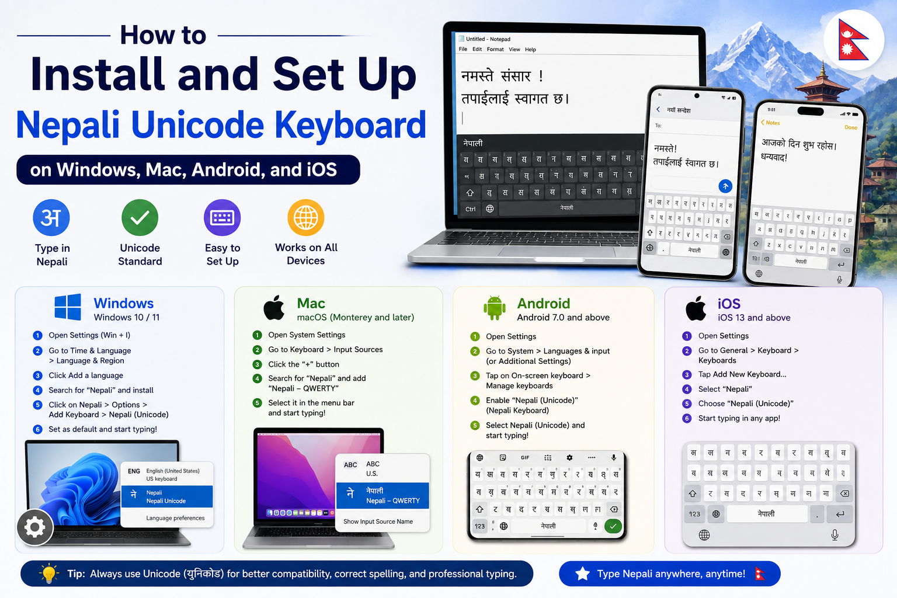

Author: Anil Lama | Published: July 2026

In the past, typing in Nepali meant installing third-party legacy fonts like Preeti, Kantipur, or Sagarmatha into Microsoft Word. While this worked for basic print publishing, it created major digital hurdles. Text written in legacy fonts turns into unreadable symbols when emailed, posted on social media, or uploaded to a database because computer operating systems treat those characters as English letters wearing a visual mask.
Nepali Unicode solves this permanently. Standardized under the international Unicode Consortium, every Devanagari character (क, ख, ग, 1, 2, 3) possesses a universally unique digital code point. Whether you send a text message from an iPhone in Kathmandu, open a PDF on a Linux server in London, or publish a blog entry on the web, Unicode guarantees your text renders perfectly without requiring font installations on the recipient's machine.
Setting up native keyboard layouts on your desktop computer or mobile device allows you to type directly in clean, web-ready Devanagari script across all applications including web browsers, WhatsApp, MS Office, Google Docs, and Adobe Photoshop.
When configuring language packs on desktop operating systems, you will encounter two primary keyboard layouts. Choosing the correct layout based on your existing skills will save you weeks of frustration.
| Feature | Nepali Unicode Traditional | Nepali Unicode Romanized |
|---|---|---|
| Target Audience | Lok Sewa aspirants, government typists, media editors, traditional Preeti typists. | Students, freelancers, software developers, beginners familiar with English QWERTY. |
| Key Mapping Logic | Maps directly to the classic Preeti keyboard layout (e.g., pressing k produces म). |
Phonetic mapping based on English sounds (e.g., pressing k produces क, r produces र). |
| Learning Curve | Requires memorizing specific Devanagari key positions. | Very fast setup time; intuitive for anyone who types in English. |
| Official Preference | Standard layout for government exams and administrative offices in Nepal. | Preferred for fast informal communication, blogging, and web development. |
Windows 11 includes built-in native support for Devanagari and Nepali script. You can enable it directly through System Settings without downloading third-party software executables.
Press Windows Key + I on your keyboard to launch Settings. In the left sidebar, click on Time & language, then select Language & region on the main panel.
Scroll down to the Preferred languages section and click the blue Add a language button. In the search box that appears, type Nepali. Select नेपाली (Nepali) from the results and click Next, then click Install.
Once installed, click the three horizontal dots (...) next to नेपाली and select Language options. Under the Keyboards header, click Add a keyboard. Windows provides built-in options including Nepali Phonetic (Romanized) and Nepali INSCRIPT. Select your preferred layout.
Look at the bottom-right corner of your screen near the clock. You will see an input indicator displaying ENG. Click it or press Windows Key + Spacebar to toggle seamlessly between English and Nepali typing modes.
Configuring Windows 10 follows a very similar process to Windows 11, with minor differences in menu navigation.
Click the Start Menu and select the Settings (Gear icon). Click on Time & Language, then click on Language in the left column.
Under Preferred languages, click the + icon labeled Add a preferred language. Search for Nepali, select नेपाली (Nepal), click Next, and hit Install. Windows will automatically download basic Devanagari font rendering assets.
Click on the newly added नेपाली language box, then click Options. Under Keyboards, click Add a keyboard and pick your preferred input layout (Phonetic/Romanized or Phonetic/INSCRIPT).
While Windows built-in keyboards work well, many typists in Nepal prefer the official standalone keyboard layout installers developed by Madan Puraskar Pustakalaya (MPP) or the Ministry of Science and Technology. These installers map 100% accurately to the exact layout rules used across government departments.
Obtain the verified installation zip folder for either Nepali Unicode Traditional or Nepali Unicode Romanized from trusted repositories or government portals.
Right-click the downloaded zip file, select Extract All, and open the extracted folder. Locate setup.exe, right-click it, and select Run as administrator.
Follow the onscreen prompts. The setup utility registers custom system DLL layout files directly into the Windows Registry (System32 driver folder). Once completed, reboot your system to apply language hooks across desktop applications.
Apple macOS offers high-quality built-in Devanagari support with beautifully designed native font choices like Kohinoor Devanagari and ITF Devanagari.
Click the Apple Logo () in the top-left corner of your menu bar and select System Settings (or System Preferences on older macOS versions).
In the sidebar, scroll down and click Keyboard. Locate the Input Sources section and click the Edit... button (or + button).
In the left search column, type Nepali or Devanagari. You will see layout options such as Devanagari - QWERTY (Phonetic Romanized) and Devanagari - Standard (Traditional layout). Select your choice and click Add.
Check the box for Show Input menu in menu bar. You can now click the input flag icon near your top right clock menu to switch between English and Nepali instantly, or press Control + Option + Spacebar.
Smartphones are the primary device for digital communication in Nepal. You can configure native Devanagari typing on Android using two reliable methods.
Nepali and select Nepali (Nepal).namaste converts automatically to नमस्ते).Hamro Nepali Keyboard remains one of the most popular third-party keyboard apps in Nepal due to its integrated dictionary, sticker packs, and built-in Unicode layout options.
Apple iOS features built-in native support for Devanagari scripts with predictive text support.
Open the Settings app on your iPhone or iPad. Tap General, then scroll down and tap Keyboard.
Tap Keyboards at the top, then tap Add New Keyboard....
Scroll down through the language list or use the search bar to locate Nepali. Select Nepali and choose between Phonetic or Devanagari layout modes, then tap Done.
When typing in any app, press and hold the Globe Icon in the bottom-left corner of the onscreen keyboard to select Nepali input instantly.
Speed up your daily workflow by mastering OS-level hotkeys to toggle between English and Nepali input modes without taking your hands off the keyboard:
Windows Key + Spacebar to cycle through installed keyboards, or press Left Alt + Shift.Control + Spacebar or Control + Option + Spacebar to toggle input sources.Cause: Your application or operating system is using an old font that lacks Devanagari character mappings.
Solution: Highlight the text and change the document font to a standard web-safe Devanagari font like Nirmala UI, Arial Unicode MS, Mangal, or Kalimati. Ensure modern browser rendering engines are up to date.
Cause: Complex Script rendering options are disabled inside older office suites.
Solution: In Microsoft Word, go to File > Options > Language and make sure Nepali is listed under Office Authoring Languages and Proofing as Enabled.
Cause: Windows SmartScreen or user permission restrictions blocking unsigned keyboard layout DLL drivers.
Solution: Right-click the installer, select Properties, check the Unblock checkbox at the bottom right, click Apply, and rerun the setup executable using Run as Administrator.
Transitioning to native Nepali Unicode is the single best technical upgrade you can make for digital productivity in Nepal. It eliminates document corruption, ensures your web and social media content is indexed properly by search engines like Google, and lets you communicate effortlessly across Windows, macOS, Android, and iOS.
Set up your preferred layout—whether Traditional for official work or Romanized for general speed—and start benefiting from standardized Devanagari digital communication today.
Do I need an internet connection to use Nepali Unicode after setup?
No. Once the language pack or keyboard layout driver is installed on your computer or mobile device, typing works 100% offline without needing internet access.
Can Google search engine read and index content typed in Nepali Unicode?
Yes. Search engine crawlers can read, index, and rank text written in Nepali Unicode seamlessly. Search engines cannot properly index legacy font text typed in Preeti or Kantipur.
Is Nepali Unicode Traditional identical to Preeti layout?
Yes. The key mappings for consonants, vowels, and numbers in the Nepali Unicode Traditional layout match the physical key locations of the traditional Preeti keyboard layout.
What is the default system font for Nepali Unicode in Windows?
Windows uses Nirmala UI as its primary rendering font for Devanagari scripts across Windows 10 and Windows 11.
Can I convert old MS Word files written in Preeti into Unicode?
Yes. You can copy text formatted in Preeti font and paste it into an online converter to transform it into standardized Unicode instantly.
© 2026 Anil Lama • anillama.com.np